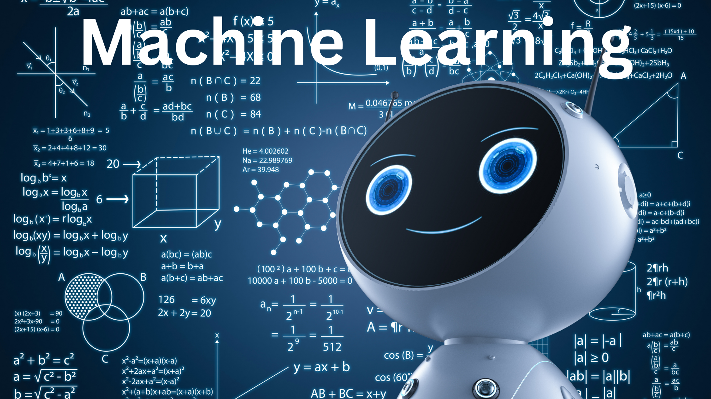

What is AI?
Artificial intelligence (AI) is a fascinating field that aims to develop computer systems capable of performing tasks that typically require human intelligence. It involves the creation of intelligent machines that can learn from and adapt to data, solve complex problems, and make decisions. AI encompasses various subfields such as machine learning, natural language processing, computer vision, and robotics. By simulating human intelligence, AI opens up a world of possibilities, revolutionizing industries and transforming the way we live and work.
How will AI be helpful to the students?
The future holds immense potential for students in harnessing the power of AI. As AI continues to advance, it will play a significant role in shaping various industries and fields. For students, understanding and embracing AI can provide a multitude of benefits. AI technology can enhance learning experiences by personalizing education, adapting to individual needs, and offering interactive and engaging content. It can also automate repetitive tasks, freeing up time for students to focus on critical thinking, creativity, and problem-solving skills. Additionally, AI skills are in high demand in the job market, and students equipped with AI knowledge will have a competitive edge in their future careers.
How will the AI Champion Course help the students?
The AI Champion course specifically designed for grades 3-6 is a remarkable opportunity for students to embark on an exciting journey into the world of AI. This course aims to introduce students to the fundamental concepts of AI in a fun and engaging way. Through interactive lessons and hands-on activities, students will learn about machine learning, computer vision, robotics, and more. They will gain an understanding of how AI technology works and its real-world applications. By exploring AI ethics and discussing the societal impact of AI, students will also develop critical thinking skills and ethical awareness.
Furthermore, the AI Champion course will foster creativity and problem-solving abilities as students participate in projects and experiments that encourage them to think like AI innovators. By nurturing their curiosity and providing a solid foundation in AI, this course empowers students to become AI champions of the future. It equips them with valuable skills and knowledge that can be applied across various disciplines and sets them on a path to thrive in a world increasingly influenced by AI.
Chapter 1: Introduction to AI
To access the chapter, click here
Lesson 1: What is AI?
In this lesson, students will delve into the world of artificial intelligence (AI) and gain a comprehensive understanding of its definition and purpose. They will explore how AI enables machines to perform tasks that typically require human intelligence, such as recognizing images, understanding natural language, and making decisions. By examining real-world examples, such as self-driving cars, voice assistants, and facial recognition systems, students will grasp the wide-ranging applications and potential of AI. They will also discuss the benefits of AI in improving efficiency, enhancing productivity, and addressing complex problems, as well as consider the ethical considerations and challenges associated with AI technology.
Lesson 2: Introducing AI
In this lesson, students will take a deep dive into the history and development of AI. They will explore significant milestones and breakthroughs that have shaped the field, from early AI pioneers to modern advancements in machine learning and deep learning. Students will gain an understanding of the different branches of AI, such as natural language processing, computer vision, and robotics. They will discuss the impact of AI on various industries, including healthcare, finance, transportation, and entertainment, and consider the implications of AI in shaping future career opportunities. Through engaging discussions and case studies, students will develop a broader perspective on the transformative potential of AI.
Lesson 3: Robotics in the Real World
In this lesson, students will discover the intersection of AI and robotics. They will explore how robots are integrated with AI technologies to perform tasks in various real-world contexts. Students will learn about the use of robots in manufacturing, healthcare, space exploration, and other industries. They will understand the capabilities and limitations of robots and gain insights into the design principles that enable robots to interact with their environment. Through captivating examples, such as surgical robots, warehouse automation, and rescue drones, students will witness the impact of AI-powered robotics on improving efficiency, safety, and human-machine collaboration.
Lesson 4: AI in Sports
This lesson will immerse students in the fascinating realm of AI applications in sports. They will discover how AI technologies revolutionize performance analysis, injury prevention, and fan engagement. Students will explore computer vision algorithms used to track player movements, analyze game strategies, and provide real-time feedback. They will learn about machine learning models that predict game outcomes, optimize training regimes, and enhance athletes' performance. Through engaging discussions and case studies, students will appreciate how AI is transforming the sports industry and shaping the future of competitive sports.
Lesson 5: AI is the New Electricity
In this thought-provoking lesson, students will delve into the concept of AI being compared to electricity in terms of its transformative potential. They will explore the pervasive nature of AI across various industries and sectors, including healthcare, transportation, finance, and entertainment. Students will discuss how AI is changing the economy, job market, and societal dynamics. They will explore both the benefits, such as increased automation, improved efficiency, and new business opportunities, and the challenges, including job displacement, privacy concerns, and ethical considerations. By critically analyzing real-world examples and engaging in ethical discussions, students will develop a holistic understanding of the societal impact of AI.
Lesson 6: Pizza by Robots
In this captivating lesson, students will explore the intersection of AI and the food industry. They will learn about the use of AI algorithms to optimize pizza recipes, cooking processes, and delivery systems. Students will discover how robots are employed in food preparation, leading to increased efficiency and consistency. They will understand the benefits and limitations of using AI and robots in the culinary world. Through engaging discussions, students will reflect on the implications of automation in the workforce, the customer experience, and the future of food industry innovation.
Chapter 2: AI in Daily Life
To access the chapter, click here
Lesson 1: AI in Grammarly
In this lesson, students will explore the role of AI in the popular writing assistant tool, Grammarly. They will understand how AI algorithms analyze grammar, spelling, and writing style to provide suggestions and corrections. Students will learn how Grammarly uses natural language processing techniques to enhance writing proficiency. Through hands-on activities and examples, students will gain practical experience in utilizing Grammarly to improve their writing skills and efficiency.
Lesson 2: How AI Works
This lesson will provide students with an in-depth understanding of how AI works. They will explore the underlying principles and techniques that enable AI systems to learn and make intelligent decisions. Students will learn about machine learning algorithms, neural networks, and data training processes. They will understand the importance of high-quality data in training AI models and explore the concept of "learning" in AI systems. Through interactive demonstrations and case studies, students will grasp the foundational concepts of AI and its potential applications.
Lesson 3: AI in Lumen5
In this lesson, students will discover how AI is integrated into Lumen5, a video creation platform. They will explore how AI algorithms analyze text and generate video content automatically. Students will learn how Lumen5 utilizes natural language processing and computer vision techniques to match relevant visuals with written content. They will understand the benefits of using AI-powered video creation tools for content creators and businesses. Through hands-on activities and exploration of Lumen5, students will have the opportunity to create their own AI-generated videos.
Lesson 4: AI in Other Daily Life Works
In this comprehensive lesson, students will explore the pervasive use of AI in various aspects of daily life. They will discover AI applications in virtual assistants, smart home devices, personalized recommendations, and online search engines. Students will discuss the advantages and challenges of AI integration in everyday technology, such as improved convenience, personalized experiences, and potential privacy concerns. They will critically reflect on the impact of AI on privacy, security, and personal data protection. Through engaging discussions, students will develop a nuanced perspective on the benefits and considerations of AI in daily life.
Chapter 3: AI Terms and Definitions
To access the chapter, click here
Lesson 1: AI Vocabulary
In this lesson, students will dive into the world of AI vocabulary and terminology. They will learn the meaning and significance of key terms used in the field of AI, such as artificial intelligence, machine learning, neural networks, algorithms, and data sets. Students will explore the definitions of these terms and understand their role in building AI systems. Through interactive activities and examples, students will familiarize themselves with AI vocabulary, enabling them to effectively communicate and understand AI concepts.
Lesson 2: Terms and Definitions Used in AI
Building upon the foundation established in the previous lesson, this lesson will expand students' knowledge of AI terms and their definitions. Students will explore a comprehensive range of AI-related terms, including supervised learning, unsupervised learning, reinforcement learning, deep learning, natural language processing, computer vision, and more. They will gain a deeper understanding of these terms and their significance in the field of AI. Through engaging discussions and real-world examples, students will solidify their grasp of AI terminology and its practical implications.
Lesson 3: Quickdraw Experiment
In this hands-on lesson, students will engage in a fun and interactive quickdraw experiment. They will explore the concept of machine learning through an engaging game-like activity. Students will be introduced to the Quick, Draw! dataset, a collection of doodles that have been used to train machine learning models. They will learn how machine learning algorithms analyze and recognize patterns in the doodles to make predictions. Students will have the opportunity to participate in the quickdraw experiment, drawing different objects and observing how the AI system predicts their drawings. Through this experiment, students will gain firsthand experience in the practical application of AI and understand the underlying principles of machine learning.
Chapter 4: Computing Concepts
To access the chapter, click here
Lesson 1: Introduction to Computers
In this lesson, students will be introduced to the fascinating world of computers. They will learn about the basic components of a computer system, including the central processing unit (CPU), input devices, output devices, and storage devices. Students will understand the role of each component and how they work together to perform various tasks. They will also explore the evolution of computers over time and gain insights into the importance of computers in our daily lives.
Lesson 2: What is Computer Memory?
Building upon the foundation established in the previous lesson, this lesson will focus on the concept of computer memory. Students will explore the definition and purpose of computer memory, which is the component that stores data and instructions for the computer to access and use. They will learn about the distinction between temporary and permanent memory and understand the vital role memory plays in computer operations.
Lesson 3: Memory Units, RAM, and ROM
In this lesson, students will dive deeper into computer memory and explore different memory units used in computing. They will learn about binary representation and the different units of memory, such as bits, bytes, kilobytes, megabytes, and gigabytes. Students will gain an understanding of random-access memory (RAM) and read-only memory (ROM) and their respective functions. They will explore the characteristics and limitations of each memory type and their impact on computer performance.
Lesson 4: Computer Memory Hierarchy
Expanding on the previous lesson, students will discover how computer memory is divided into different levels in the memory hierarchy. They will explore the concept of cache memory, which provides faster access to frequently used data and instructions. Students will learn about the different levels of cache memory, including L1, L2, and L3 caches, and understand their roles in improving computer performance. Additionally, they will explore secondary memory, such as hard disk drives (HDD) and solid-state drives (SSD), which provide long-term storage for data and programs.
Chapter 5: Basic Terms Used in Computing
To access the chapter, click here
Lesson 1: Input and Output
In this lesson, students will learn about the fundamental concepts of input and output in computing. They will explore different input devices, such as keyboards, mice, scanners, and microphones, and understand how they allow users to provide instructions and data to the computer. Students will also explore various output devices, including monitors, printers, and speakers, which display or present the results generated by the computer.
Lesson 2: Common Computing Concepts
Building upon the previous lesson, this lesson will cover common computing concepts that form the foundation of computer programming. Students will learn about variables, which are used to store and manipulate data, and data types, such as numbers, strings, and booleans. They will also explore the concept of operators, which perform mathematical and logical operations, and understand the importance of data representation and coding systems.
Lesson 3: Algorithms, Loops, and Conditionals
In this lesson, students will dive into the world of algorithms, which are step-by-step instructions used to solve problems. They will learn about the importance of logical thinking and problem-solving skills in algorithmic design. Students will also explore loops, which allow for repetitive execution of a set of instructions, and conditionals, which enable decision-making in a program. Through interactive examples and exercises, students will develop their understanding of these fundamental concepts and their significance in computer programming.
Chapter 6: Scratch
To access the chapter, click here
Lesson 1: What is Scratch?
In this lesson, students will be introduced to Scratch, a visual programming language designed for beginners. They will learn about the history and purpose of Scratch, as well as its features and capabilities. Students will understand that Scratch allows them to create interactive stories, animations, and games by snapping together blocks of code.
Lesson 2: What is Programming?
Building upon the knowledge gained in the previous lesson, this lesson will provide an overview of programming concepts. Students will understand the fundamental principles of programming, including sequencing, repetition, and conditionals. They will explore the role of programming in controlling computer behavior and solving problems.
Lesson 3: Account Creation in Scratch
In this lesson, students will learn how to create a Scratch account. They will explore the Scratch website and go through the process of signing up and creating their own profiles. Students will understand the importance of creating an account to save and share their projects with others.
Lesson 4: Workspace and Terminologies
Students will dive into the Scratch workspace in this lesson. They will familiarize themselves with the different components of the Scratch interface, including the stage and the coding area. Students will also learn common terminologies used in Scratch, such as sprites (characters or objects), scripts (sequences of blocks), and costumes (visual appearances).
Lesson 5: Functionalities in Scratch
This lesson will introduce students to the various functionalities available in Scratch. They will explore different blocks and their functions, including motion blocks (for controlling sprite movement), hat blocks (triggering actions), variables (storing and manipulating data), conditionals (making decisions), and broadcast blocks (sending and receiving messages between sprites).
Lesson 6: Loops and Conditionals
Building upon the previous lesson, students will delve into loops and conditionals in Scratch. They will learn how to use repeat loops to perform actions multiple times and conditionals (such as if-else statements) to make decisions based on certain conditions. Students will practice implementing these concepts in their Scratch projects.
Lesson 7: Scrolling Background and Animations
In this lesson, students will explore how to create scrolling backgrounds and animations in Scratch. They will learn techniques to make sprites move smoothly across the stage and create the illusion of a scrolling background. Students will also experiment with different animation effects to enhance the visual appeal of their projects.
Lesson 8: Sensing Blocks and Sprites
In the final lesson of the Scratch chapter, students will discover the sensing blocks and their functionalities in Scratch. They will learn how to incorporate sensor inputs, such as mouse interactions and key presses, to create interactive experiences. Students will also explore the concept of cloning sprites to create multiple instances and expand their project possibilities.
Chapter 7: Basic Concepts
To access the chapter, click here
Lesson 1: Big 5 AI Ideas
In this lesson, students will explore the five core ideas of artificial intelligence (AI). They will learn about perception, which involves the ability of AI systems to sense and understand the world through various sensors. Students will also explore learning, which refers to AI systems acquiring knowledge and improving their performance over time. They will discover the societal impact of AI, including its benefits and challenges. Additionally, students will explore natural interaction, which focuses on AI systems understanding and responding to human language and behavior. Finally, students will learn about representation and reasoning, which involves how AI systems represent and process information to make decisions.
Lesson 2: Perception
This lesson will delve into the concept of perception in AI. Students will learn how AI systems use sensors, such as cameras and microphones, to gather data from the environment. They will explore techniques like computer vision and speech recognition that enable AI systems to understand visual and auditory information. Students will also discover applications of perception in areas like image recognition, object detection, and speech synthesis.
Lesson 3: Learning
Building upon the previous lesson, students will explore the concept of learning in AI. They will learn about different learning techniques, including supervised learning, unsupervised learning, and reinforcement learning. Students will understand how AI systems can be trained using labeled data, discover patterns and relationships in unlabeled data, and make decisions based on rewards and punishments. They will explore applications of learning in fields such as image classification, recommendation systems, and game playing.
Lesson 4: Societal Impact
In this lesson, students will critically examine the societal impact of AI. They will explore the potential benefits of AI, such as automation of tedious tasks, improved healthcare diagnostics, and enhanced accessibility. Students will also discuss ethical considerations, including privacy concerns, job displacement, and biases in AI systems. They will engage in discussions on responsible AI development and usage, considering the potential social, economic, and ethical implications.
Lesson 5: Natural Interaction
This lesson will focus on the concept of natural interaction in AI. Students will learn about technologies that enable AI systems to understand and respond to human language and behavior, including natural language processing and gesture recognition. They will explore applications of natural interaction, such as virtual assistants, voice-controlled devices, and facial recognition. Students will also discuss the challenges and considerations associated with natural interaction, including privacy and ethical concerns.
Lesson 6: Representation and Reasoning
In the final lesson of the Basic Concepts chapter, students will explore how AI systems represent and reason with information. They will learn about knowledge representation techniques, such as semantic networks and ontologies, that enable AI systems to organize and store information. Students will also discover reasoning methods, such as rule-based systems and logical inference, that allow AI systems to make decisions and solve problems. They will explore applications of representation and reasoning in areas like expert systems, recommendation engines, and intelligent tutoring systems.
Chapter 8: Conversational AI
To access the chapter, click here
Lesson 1: What is Conversational AI
In this lesson, students will be introduced to conversational AI. They will learn about the concept of AI systems engaging in conversations with humans. Students will understand how conversational AI combines natural language processing and machine learning techniques to understand and respond to human input.
Lesson 2: Voicebots
Building upon the previous lesson, students will explore the concept of voicebots. They will learn how voicebots use speech recognition technology to understand spoken commands and provide voice-based responses. Students will discover the applications of voicebots in virtual assistants, smart speakers, and voice-controlled devices.
Lesson 3: Chatbots
Students will delve into chatbots in this lesson. They will learn how chatbots use natural language processing algorithms to understand and generate text-based conversations. Students will explore the various types of chatbots, including rule-based chatbots and machine learning-based chatbots. They will also discover the applications of chatbots in customer support, information retrieval, and interactive experiences.
Lesson 4: Use of Chatbots and Its Applications
In the final lesson of the Conversational AI chapter, students will explore the use of chatbots and their applications in various domains. They will learn how chatbots can assist in customer service, provide personalized recommendations, and facilitate information retrieval. Students will also discuss the benefits and limitations of chatbots, including considerations related to privacy, data security, and user experience.
Chapter 9 - Machine Learning
To access the chapter, click here

Lesson 1: Introduction to Machine Learning
In this lesson, we will delve into the fundamentals of Machine Learning (ML). We will explore what ML is, how it differs from traditional programming, and the basic concepts and techniques involved. You will gain a solid understanding of the principles behind ML and its significance in the field of artificial intelligence. We will discuss the key components of ML, such as training data, algorithms, and model evaluation, setting the stage for further exploration.
Lesson 2: Applications of Machine Learning
In this lesson, we will explore the diverse and exciting applications of Machine Learning across various industries. We will dive into real-world examples where ML has made a significant impact, such as healthcare, finance, e-commerce, marketing, and autonomous vehicles. By examining these applications, you will understand the immense potential of ML and how it can be leveraged to solve complex problems and drive innovation in different domains.
Lesson 3: Image Colorization using Machine Learning
In this lesson, we will explore the fascinating field of image colorization using Machine Learning. You will learn how ML models can be trained to convert grayscale images into vibrant and realistic color versions. We will cover the underlying techniques involved, such as Convolutional Neural Networks (CNNs) and Generative Adversarial Networks (GANs), which enable the models to learn the relationships between grayscale and colored images. By the end of this lesson, you will have a solid grasp of the image colorization process and its potential applications.
Lesson 4: Training a Model with Data
In this lesson, we will dive deep into the process of training a Machine Learning model with data. We will start by understanding the importance of data and how to collect or generate a suitable dataset for training. You will learn about preprocessing techniques to clean, normalize, and transform the data before feeding it into the model. We will also cover the concept of training and testing data splits, as well as the iterative learning process through optimization algorithms like gradient descent. By the end of this lesson, you will be equipped with the knowledge and skills to train your own ML models effectively.
Chapter 10 - Natural Language Processing (NLP)
To access the chapter, click here
Lesson 1: Introduction to Natural Language Processing
In this lesson, we will introduce you to the fascinating field of Natural Language Processing (NLP). You will learn what NLP is and why it is crucial for enabling computers to understand, interpret, and generate human language. We will explore the challenges and complexities associated with NLP, such as syntactic and semantic analysis, language modeling, and text classification. By the end of this lesson, you will have a solid foundation in NLP and its significance in various applications.
Lesson 2: Uses of Natural Language Processing
In this lesson, we will delve into the diverse and practical uses of Natural Language Processing. We will explore how NLP powers applications such as sentiment analysis, machine translation, information extraction, question-answering systems, and chatbots. We will discuss the underlying techniques and algorithms used in these applications, providing you with a comprehensive understanding of the capabilities and potential of NLP.
Lesson 3: Sematris Game: Linking with NLP
In this lesson, we will explore the intriguing connection between NLP and the Sematris game. Sematris is a language-based puzzle game that challenges players to arrange words in a grid, following specific rules and constraints. We will dive into how NLP techniques can be applied to solve Sematris puzzles, including word embeddings, semantic similarity, and language generation. Through this lesson, you will witness the practical application of NLP in a fun and engaging context, enhancing your understanding of the power of language processing algorithms.
Chapter 11 - Computer Vision
To access the chapter, click here
Lesson 1: Introduction to Computer Vision
In this lesson, we will embark on a journey into the fascinating field of Computer Vision (CV). You will learn what CV is and how it enables computers to understand and interpret visual information from images and videos. We will explore the underlying principles and techniques employed in CV, such as image processing, feature extraction, and object detection. By the end of this lesson, you will have a solid understanding of CV and its potential applications in various domains.
Lesson 2: Applications and Uses of Computer Vision
In this lesson, we will dive into the wide range of applications and uses of Computer Vision in different industries. We will explore how CV is employed in fields such as healthcare, autonomous vehicles, surveillance, augmented reality, and image recognition. By examining real-world examples, you will gain insights into how CV has revolutionized various sectors and enabled innovative solutions to complex problems. This lesson will highlight the immense potential of CV and inspire you to explore its applications further.
Lesson 3: Emoji Scavenger Hunt Experiment
In this unique and exciting lesson, we will delve into the world of interactive computer vision through the Emoji Scavenger Hunt experiment. You will learn how machine learning models can be trained to recognize objects in real-time using a smartphone camera. We will explore the underlying technologies, such as deep learning and image classification, that power this experiment. By participating in the Emoji Scavenger Hunt, you will not only have fun but also gain a hands-on understanding of how CV can be applied in interactive and engaging experiences.
Chapter 12 - Robotics
To access the chapter, click here
Lesson 1: AI in Robotics
In this lesson, we will explore the integration of Artificial Intelligence (AI) in the field of robotics. You will learn how AI technologies enhance the capabilities of robots, enabling them to perceive, reason, and act in dynamic environments. We will delve into the various AI techniques utilized in robotics, such as machine learning, computer vision, and motion planning. By the end of this lesson, you will have a comprehensive understanding of the synergistic relationship between AI and robotics.
Lesson 2: AI and Robotics: Bridging the Gap
In this lesson, we will bridge the gap between AI and robotics by exploring their interplay and the unique contributions each field brings to the other. We will discuss how robotics benefits from AI techniques, such as reinforcement learning for robot control and computer vision for object recognition. Additionally, we will examine how robotics influences AI research, particularly in the areas of embodied intelligence and embodied cognition. By the end of this lesson, you will appreciate the symbiotic relationship between AI and robotics and their collective impact on technological advancements.
Lesson 3: Understanding Sensors - Camera and Microphone
In this lesson, we will delve into the fundamental sensors used in robotics: the camera and the microphone. You will gain an understanding of how cameras and microphones enable robots to perceive and interact with their environment. We will explore the principles of image sensing, image processing, and computer vision techniques used in cameras. Additionally, we will delve into audio sensing, sound localization, and speech recognition techniques used in microphones. By the end of this lesson, you will have a solid understanding of these essential sensors and their role in enabling robots to gather information and make informed decisions.
Chapter 13 - AI and Society
To access the chapter, click here
Lesson 1: AI Ethics
In this lesson, we will delve into the important topic of AI ethics. We will discuss the ethical considerations and challenges that arise with the development and deployment of AI systems. We will explore topics such as fairness, transparency, accountability, privacy, and bias in AI algorithms. By examining real-world case studies and ethical frameworks, you will gain insights into the ethical implications of AI and the responsibility that comes with developing AI systems that align with societal values.
Lesson 2: Ethical Issues in AI
In this lesson, we will explore specific ethical issues that emerge in the context of AI. We will examine topics such as job displacement, automation bias, autonomous weapons, deepfakes, and the impact of AI on social structures. Through thought-provoking discussions and ethical analysis, you will develop a deep understanding of the potential risks and societal implications associated with AI. This lesson aims to raise awareness and promote ethical decision-making in the development and deployment of AI technologies.
Conclusion
In conclusion, this comprehensive course on artificial intelligence (AI) provides an exceptional opportunity for individuals looking to delve into the world of AI and its diverse applications. Through a series of engaging lessons, learners will gain a solid understanding of the key principles and concepts that underpin AI technology.
The course covers essential topics such as machine learning (ML), natural language processing (NLP), computer vision (CV), robotics, and AI ethics. In the ML lessons, learners will explore the power of training models with data to make predictions and solve complex problems. The NLP lessons will shed light on how AI can process and understand human language, enabling applications such as sentiment analysis, language translation, and information retrieval.
Moreover, the CV lessons will showcase the incredible capabilities of AI in analyzing visual data, opening up avenues for image recognition, object detection, and more. The robotics section will explore the integration of AI in robotic systems and highlight the significance of sensor technologies like cameras and microphones. Lastly, the course delves into the ethical implications of AI, equipping learners with the knowledge to navigate the ethical challenges associated with AI technologies.
By enrolling in this course, individuals will gain a well-rounded understanding of AI and its potential impact on society. Whether one aims to pursue a career in AI, leverage AI technologies in their field, or simply gain a deeper appreciation for this rapidly advancing domain, this course serves as an excellent foundation. So, embark on this educational journey and discover the exciting world of AI.